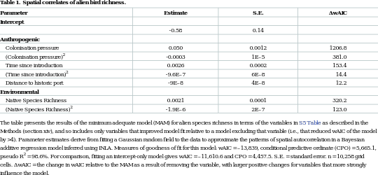

<?xml version="1.0" encoding="UTF-8"?>
<table title="table1" id="table1" class="tabcontent" xmlns="http://www.w3.org/1999/xhtml">
 <tr>
  <td>
   
   <p>corpus-oa-validation/10.1371_journal.pbio.2000942/tables/table1/table.svg.png</p>
  </td>
  <td>
   <table class="table">
    <caption/>
    <tr>
     <th class="cell">The table presents the results of the minimum adequate model (MAM) for alien species richness in terms of the variables in S5 Table as described in the Methods (section xiv), and so includes only variables that improved model fit relative to a model excluding that variable (i.e., that reduced wAIC of the model by &gt;4). Parameter estimates derive from fitting a Gaussian random field to the data to approximate the patterns of spatial autocorrelation in a Bayesian additive regression model inferred using INLA. Measures of goodness of fit for this model: wAIC = –13,839, conditional predictive ordinate (CPO) = 5,665.1, pseudo R^{2} = 98.6%. For comparison, fitting an intercept-only model gives wAIC = –11,610.6 and CPO = 4,457.5. S.E. = standard error. n = 10,258 grid cells. ΔwAIC = the change in wAIC relative to the MAM as a result of removing the variable, with larger positive changes for variables that more strongly influence the model. </th>
    </tr>
   </table>
   <p>corpus-oa-validation/10.1371_journal.pbio.2000942/tables/table1/table.svg.html</p>
  </td>
 </tr>
</table>
